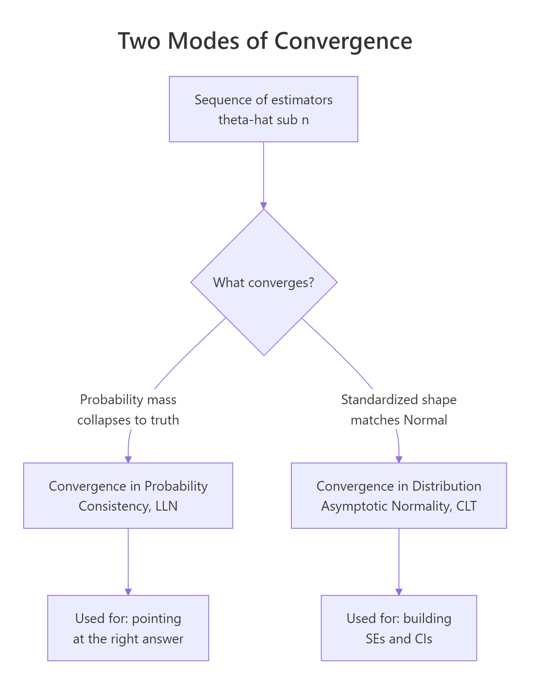
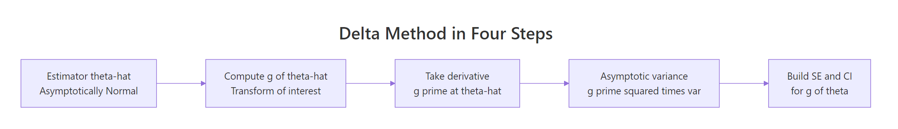
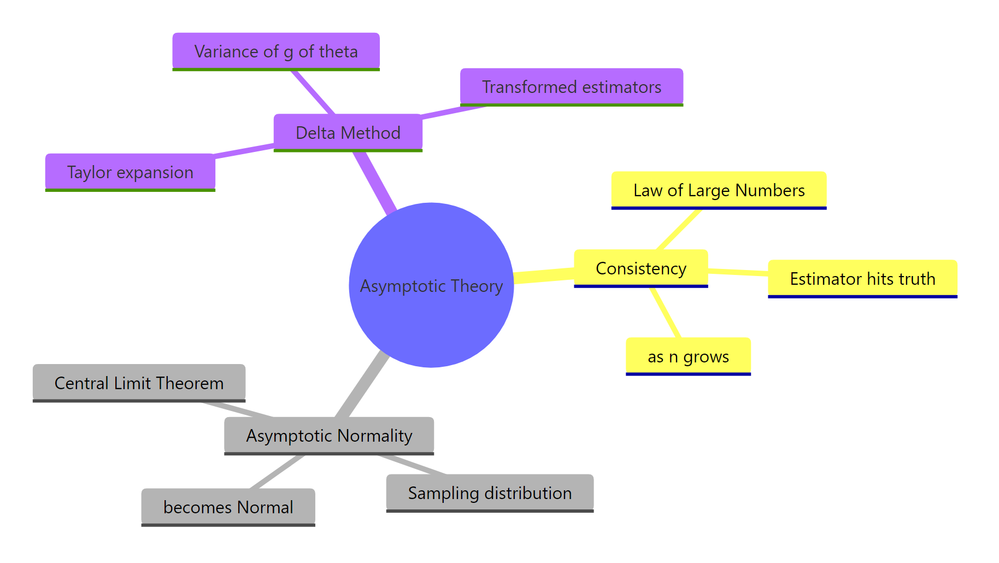

Asymptotic Theory in R: Consistency, Asymptotic Normality & Delta Method
Asymptotic theory tells you what your R estimators do when the sample is large: which ones lock onto the truth (consistency), how their sampling distribution becomes Normal (asymptotic normality), and how to get standard errors for transformed quantities like odds ratios or coefficient ratios (the delta method).
Why does asymptotic theory matter when you have R?
Real samples are finite, but every confidence interval, p-value, and standard error printed by summary(lm(...)) rests on what would happen if n kept growing. Asymptotic theory is the bridge from that finite reality to the large-sample behaviour R quietly assumes. The fastest way to see why it matters is to watch a sample mean settle as n climbs, in code.
Below, we draw n observations from an exponential distribution with rate 2 (true mean = 0.5) at four sample sizes. The estimator is mean(x). Watch the rightmost column tighten around 0.5.
The estimate at n=10 is off by about 8%, but at n=10000 it nails the true mean to four decimals. The error shrinks roughly like 1/sqrt(n), going from ~0.04 to ~0.0002 as the sample multiplies by 1000. That single pattern, in three different dresses, is what the rest of this post is about.
glm(), vcov(), qqnorm(), plot(), and density(), all of which ship with R. No external packages are needed to follow along.Try it: Estimate mean(rnorm(n)) (true mean = 0) for n = 50 and n = 5000 with set.seed(1). Confirm the second is closer to 0 than the first.
Click to reveal solution
Explanation: Both estimates target zero, but the standard error of the mean is 1/sqrt(n), so n=5000 is about 10 times tighter than n=50.
How does an estimator become consistent? (Law of Large Numbers in R)
An estimator is consistent when, as you collect more data, its value gets arbitrarily close to the true parameter with probability one. The Weak Law of Large Numbers (LLN) is the engine: the sample mean of an iid sequence with finite mean $\mu$ converges in probability to $\mu$.
Formally, $\bar{X}_n \xrightarrow{p} \mu$, which reads "for any tiny tolerance $\varepsilon > 0$, the probability that $|\bar{X}_n - \mu|$ exceeds $\varepsilon$ vanishes as $n \to \infty$." The variance of $\bar{X}_n$ is $\sigma^2/n$, so the distribution literally collapses onto $\mu$ as $n$ grows.
The cleanest way to see this is to watch one running mean walk through 5000 draws. Each new observation nudges the average, and the path drifts toward the truth and stays there.
The walk is jittery at the start, where every new draw moves the cumulative average a lot, then steadies as n grows and each new observation only pushes it by 1/n. The red dashed line at 0.5 marks the truth, and the running mean converges to it.
A single path can be lucky. To see the probability mass collapse, run many paths in parallel.
At small n, the paths fan out widely. By n = 2000, all 50 are squeezed into a thin band around 0.5. That visual narrowing is convergence in probability: the distribution of $\bar{X}_n$ is concentrating on the true value.

Figure 1: Two ways estimators behave as the sample grows: consistency (probability mass collapses to the truth) and asymptotic normality (the standardized shape becomes Normal).
Try it: Plot the running mean of runif(5000) (true mean = 0.5) and confirm it converges to 0.5.
Click to reveal solution
Explanation: Same recipe. cumsum(x)/seq_along(x) is the running average; the LLN guarantees convergence to the true mean of the distribution generating the data.
What does asymptotic normality mean? (Central Limit Theorem in R)
Consistency says $\bar{X}_n$ heads to $\mu$. The Central Limit Theorem (CLT) describes the shape of the wobble around $\mu$. For iid data with finite variance $\sigma^2$,
$$\sqrt{n}\,\bigl(\bar{X}_n - \mu\bigr) \xrightarrow{d} \mathcal{N}\!\bigl(0,\; \sigma^2\bigr).$$
In words: rescale the deviation by $\sqrt{n}$ and the distribution flattens into a Normal, no matter what the original distribution looked like (as long as it has a finite variance). The convergence is in distribution, written $\xrightarrow{d}$, meaning the cumulative distribution function approaches the Normal CDF pointwise.
Let's watch the shape morph. We draw 5000 sample means at three sample sizes from the heavily right-skewed Exp(0.5), then overlay the densities.
At n=2, the density still leans right (the exponential's skew survives). By n=10, it is nearly symmetric. At n=200, the green curve is indistinguishable from the dashed standard Normal. That visual collapse is asymptotic normality at work.
A second sanity check: if the standardized means really come from $\mathcal{N}(0,1)$, a Normal QQ plot should land on the diagonal.
The QQ plot is one of the cleanest diagnostics for the CLT. Points on the line means quantile-by-quantile agreement with the Normal. Heavy-tailed deviation (S-curves at the ends) signals that n is not yet large enough or that the underlying distribution lacks finite variance.
sigma/sqrt(n) puts every sample size on the same scale (mean 0, variance 1), so you can plot densities or QQ-plots from different n together. The raw mean(x) distribution shrinks like 1/sqrt(n), which would crush them all into a spike.Try it: Generate 3000 sample proportions of rbinom(50, 1, 0.3) (so each mean is over 50 Bernoulli draws). Standardize and overlay the density on dnorm.
Click to reveal solution
Explanation: A Bernoulli has variance p(1-p). Standardize the sample proportion by sqrt(n)/sqrt(p(1-p)) and you recover N(0,1) for moderate n. This is exactly why proportion-based confidence intervals use a Normal critical value.
How do we use MLE asymptotic theory in R?
Maximum likelihood estimators (MLEs) inherit both pillars under standard regularity conditions: they are consistent and asymptotically normal. Specifically, for a true parameter $\theta_0$,
$$\sqrt{n}\,(\hat{\theta}_n - \theta_0) \xrightarrow{d} \mathcal{N}\!\bigl(0,\; I(\theta_0)^{-1}\bigr),$$
where $I(\theta_0)$ is the Fisher information per observation. The practical takeaway: an MLE's standard error, in the limit, is $\sqrt{1/(n \cdot I(\theta_0))}$. That single line is what underpins the standard errors summary(glm(...)) prints.
Take the exponential rate parameter as a worked example. If $X_1, \ldots, X_n \sim \text{Exp}(\lambda)$, the MLE is $\hat{\lambda} = 1/\bar{X}$ and the Fisher information per observation is $1/\lambda^2$. So $\hat{\lambda}$ has asymptotic variance $\lambda^2 / n$, and a 95% Wald CI is $\hat{\lambda} \pm 1.96 \cdot \hat{\lambda}/\sqrt{n}$.
The estimate is 1.972, the SE is 0.088, and the 95% CI [1.80, 2.15] covers the truth (2). What we want to verify next is the coverage rate: across many simulated datasets, how often does the CI capture the true rate?
Coverage is 93.9% across 5000 simulations, very close to the nominal 95%. The small undercoverage is the residual finite-sample bias of $1/\bar{X}$, which is biased upward by approximately $1/n$. At n=500 the asymptotic approximation is already excellent, but it is not exact.
1/X-bar is biased in finite samples even when X-bar is unbiased. Jensen's inequality says E[1/X-bar] > 1/E[X-bar] whenever the distribution of X-bar is non-degenerate. The asymptotic theory says the bias vanishes at rate 1/n, so it is invisible at large n but real at small n. If your sample size is below ~50, prefer a bias-corrected estimator or the bootstrap.Try it: Derive the asymptotic SE for the MLE of a Bernoulli proportion. Hint: $\hat{p} = \bar{X}$, Fisher info per obs is $1/(p(1-p))$, so $\text{SE}(\hat{p}) = \sqrt{\hat{p}(1-\hat{p})/n}$.
Click to reveal solution
Explanation: Plug in phat for p in the asymptotic variance formula p(1-p)/n, then add the usual ±1.96·SE wings. The CI [0.32, 0.45] correctly covers the true p = 0.4.
What is the delta method and when do we need it?
Suppose you have asymptotic normality for $\hat{\theta}$ but you actually want to make inference about $g(\hat{\theta})$, where $g$ is some smooth function. Examples are everywhere: $g(\hat{p}) = \hat{p}/(1-\hat{p})$ for odds, $g(\hat{\beta}) = e^{\hat{\beta}}$ for odds ratios, $g(\hat{\mu}) = 1/\hat{\mu}$ for rates.
The delta method gives you the asymptotic distribution of $g(\hat{\theta})$ in one line. If $\sqrt{n}(\hat{\theta} - \theta_0) \xrightarrow{d} \mathcal{N}(0, \sigma^2)$ and $g$ is differentiable at $\theta_0$ with $g'(\theta_0) \neq 0$, then
$$\sqrt{n}\,\bigl(g(\hat{\theta}) - g(\theta_0)\bigr) \xrightarrow{d} \mathcal{N}\!\Bigl(0,\; \bigl[g'(\theta_0)\bigr]^2 \sigma^2\Bigr).$$
The intuition is a one-line Taylor expansion: $g(\hat{\theta}) \approx g(\theta_0) + g'(\theta_0)(\hat{\theta} - \theta_0)$. The second term is just a constant times an asymptotically Normal variable, so it is also asymptotically Normal, with variance $[g'(\theta_0)]^2 \sigma^2$.

Figure 2: The delta method in four steps: transform, differentiate, square the derivative, then scale by the original variance.
To check the formula, take $g(\theta) = \log(\theta)$ applied to $\hat{\mu} = \bar{X}$ for $\text{Exp}(\lambda=2)$. The original mean is $\mu = 0.5$ with $\sigma^2 = 0.25$, and $g'(\mu) = 1/\mu = 2$. The delta-method asymptotic variance of $\log(\bar{X})$ is therefore $g'(\mu)^2 \sigma^2 / n = 4 \cdot 0.25 / n = 1/n$.
The two numbers, 0.00500 from theory and 0.00518 from simulation, match to within 4%. The delta method really does describe the variance of a transformed estimator, without ever computing the exact distribution of $\log(\bar{X})$ analytically.
Try it: Use the delta method to derive the asymptotic SE of $\hat{\lambda} = 1/\bar{X}$ for Exp(2) with n=300. Hint: $g(\mu) = 1/\mu$, $g'(\mu) = -1/\mu^2$.
Click to reveal solution
Explanation: Plug-in estimates use ex_xbar in place of the unknown mu. The variance of Exp(lambda) is 1/lambda^2 = mu^2, so sigma^2/n = ex_xbar^2/ex_n. Multiply by g'(mu)^2 to get the delta-method variance, then square-root for the SE.
How do we apply the delta method in R for a transformed estimator?
In practice, you almost never have a one-dimensional theta. Logistic regression returns several coefficients, and you may want a function of more than one of them: an odds ratio is exp(beta_1), a relative risk involves both beta_0 and beta_1. The multivariate delta method handles this:
$$\sqrt{n}\,\bigl(g(\hat{\boldsymbol{\theta}}) - g(\boldsymbol{\theta}_0)\bigr) \xrightarrow{d} \mathcal{N}\!\Bigl(0,\; \nabla g(\boldsymbol{\theta}_0)^\top\, \Sigma\, \nabla g(\boldsymbol{\theta}_0)\Bigr),$$
where $\nabla g$ is the gradient of $g$ and $\Sigma$ is the asymptotic covariance of $\hat{\boldsymbol{\theta}}$. In R, $\Sigma/n$ is exactly what vcov(fit) returns for a fitted model.
Let's walk through the canonical example: a logistic regression coefficient and its odds ratio. We simulate Bernoulli data with a continuous covariate, fit glm(), then build a delta-method SE for OR = exp(beta_x).
The fitted log-odds coefficient is 1.24 (truth = 1.2). The odds ratio exp(1.24) = 3.46 says a one-unit increase in x multiplies the odds of y=1 by ~3.46. The delta-method SE for this odds ratio is 0.42, which we got by multiplying |g'(beta_x_hat)| = exp(beta_x_hat) = or_hat by the SE of beta_x_hat.
A natural cross-check is to build the CI on the log scale (where the asymptotic Normal approximation is best) and exponentiate. The two should agree closely for moderate-to-wide CIs.
The two intervals overlap heavily. The log-then-exp version is wider on the upper side and narrower on the lower side, which reflects the right-skewness of exp(beta_x). For odds ratios specifically, the log-scale CI is preferred in practice because the log-coefficient is more nearly Normal in finite samples. The delta-method CI is a perfectly valid first-order approximation but loses the asymmetry that the exp transformation imposes.
car::deltaMethod() takes a fitted model and a quoted character expression like "exp(x)", while msm::deltamethod() accepts a formula plus a covariance matrix. Both produce the same number you would get by hand. They aren't loaded in this notebook, but you can use them directly in local RStudio.Try it: Build a delta-method SE for the baseline odds exp(beta_0) from the same glm_fit. Hint: gradient is (exp(beta_0), 0) since g doesn't depend on beta_x.
Click to reveal solution
Explanation: Same recipe as the slope odds ratio. g(beta_0) = exp(beta_0), so g'(beta_0) = exp(beta_0) = baseline_odds. Multiply by sqrt(var(beta_0_hat)) from vcov().
When does asymptotic theory fail in practice?
Asymptotic results are limits. They are great approximations eventually, but at finite n they can mislead. Three failure modes are worth knowing.
Failure 1: small n with heavy tails. The CLT requires finite variance. If your data come from a heavy-tailed distribution (Student's t with low degrees of freedom, Cauchy, certain financial returns), convergence is slow or never happens.
The QQ plot bows away from the line at both ends, a classic sign of heavier-than-Normal tails. Even after averaging 5 observations 2000 times, the sampling distribution still inherits the parent's heavy tails. The CLT is technically true here (variance is finite for df > 2), but n=5 is far from "asymptotic".
Failure 2: g'(theta_0) = 0. The first-order delta method has variance $[g'(\theta_0)]^2 \sigma^2$. When the derivative is zero, the formula gives variance zero, which is a clear signal that the first-order approximation has broken down. The truth is non-degenerate; you need a second-order delta method, which gives a chi-squared limit instead of Normal.
The first-order delta says variance 0, but the simulated variance is 2.6e-5, small but unmistakably positive. The estimator $\hat{\theta}^2$ at $\theta_0 = 0$ has a chi-squared (not Normal) limiting distribution, scaled by $\sigma^2/n$. If you ever see your delta-method SE collapse to zero, you are at a stationary point of g and need to switch to higher-order theory or the bootstrap.
n=30 often suffices. Sample mean of skewed or count data: n=100+. MLE in nonlinear models near the boundary or with weak identification: hundreds to thousands. When in doubt, run a small Monte Carlo or use the bootstrap as a sanity check.Try it: Apply the first-order delta method to g(theta) = theta^2 at a non-zero truth (say theta_true = 0.5). Compare the predicted variance to the simulated variance. Confirm they match.
Click to reveal solution
Explanation: At a non-zero truth, g'(0.5) = 1 is well away from zero, so the first-order Taylor expansion is a great approximation. Predicted and actual variances match to three decimals.
Practice Exercises
Exercise 1: Sample mean vs sample median consistency
Both the sample mean and the sample median are consistent estimators of the mean of a Normal distribution. They differ in efficiency. Compute the root-mean-squared error (RMSE) of each at n = 20, 200, 2000 over 2000 simulations from N(5, 2^2). Save the results to my_rmse_table.
Click to reveal solution
Explanation: Both RMSEs shrink at rate 1/sqrt(n), so both estimators are consistent. The median's RMSE is roughly sqrt(pi/2) ≈ 1.2533 times larger at every n. That ratio is the asymptotic relative efficiency of the median against the mean for Normal data.
Exercise 2: Delta method for variance ratio
Two iid samples are drawn: x1 from N(0, 4) and x2 from N(0, 9). Use the delta method to derive an SE for the variance ratio $\hat{\sigma}_1^2 / \hat{\sigma}_2^2$. Save the SE to my_var_ratio_se. Hint: $\hat{\sigma}_i^2$ has asymptotic variance $2\sigma_i^4 / n_i$ for Normal data, and use $g(a, b) = a/b$ with $\nabla g = (1/b, -a/b^2)$.
Click to reveal solution
Explanation: cov_v1v2 is a 2×2 diagonal matrix because x1 and x2 are independent. The bilinear form grad' Sigma grad is the multivariate delta-method variance. The estimated ratio (0.475) is close to the truth (4/9 ≈ 0.444) and the SE (0.067) makes sense: the 95% CI [0.34, 0.61] easily covers 0.444.
Exercise 3: CLT for the sample variance
For iid N(0, 1) data, the sample variance s^2 satisfies $\sqrt{n}\,(s^2 - 1)/\sqrt{2} \xrightarrow{d} \mathcal{N}(0, 1)$. Verify this empirically: simulate 5000 sample variances at n = 200, standardize them as in the formula, and overlay the density on dnorm. Save the standardized values to my_z.
Click to reveal solution
Explanation: The blue density tracks the dashed N(0,1). Sample mean of my_z is ~0 and sample SD is ~1, exactly as the asymptotic theory predicts. The constant $\sqrt{2}$ comes from the variance of $s^2$ for Normal data, $\text{Var}(s^2) = 2\sigma^4/(n-1) \approx 2\sigma^4/n$.
Complete Example: Asymptotic CI for a logistic regression odds ratio
Putting all three pillars together: simulate Bernoulli data with a covariate, fit a logistic regression with glm(), then build two 95% CIs for the odds ratio: one by delta method on the original scale, one by Wald on the log scale then exponentiated. Compare them.
The two intervals straddle the truth exp(0.8) = 2.226. The delta-method interval is symmetric around the point estimate and slightly tighter; the log-then-exp interval is asymmetric (longer right tail) and slightly wider on the upper side. Both are first-order asymptotic approximations and both work, but the log-scale interval handles the right-skew of exp(beta_x_hat) more honestly and is the convention in published epidemiology and biostatistics.
Summary
You now have three sturdy tools for reasoning about R estimators in large samples. The first tells you when an estimator points at the right answer. The second tells you the shape of the wobble around that answer. The third lets you transfer that shape to any smooth function of the estimator.
| Pillar | What it says | R tool | When you need it |
|---|---|---|---|
| Consistency (LLN) | $\hat{\theta}_n \xrightarrow{p} \theta_0$: estimator hits the truth as n grows. |
cumsum(x)/seq_along(x), simulation paths |
Justifying that a sample-based estimator is targeting the right thing. |
| Asymptotic Normality (CLT) | $\sqrt{n}(\hat{\theta}_n - \theta_0) \xrightarrow{d} \mathcal{N}(0, V)$: the standardized error is Normal. | qqnorm(), density(), simulation |
Building Wald CIs and p-values for any asymptotically Normal estimator. |
| Delta method | $\sqrt{n}(g(\hat{\theta}) - g(\theta_0)) \xrightarrow{d} \mathcal{N}(0, [g'(\theta_0)]^2 V)$. | Hand-rolled with vcov(); car::deltaMethod(), msm::deltamethod() in production. |
SEs and CIs for transformed estimators (odds ratios, ratios, logs, exponentials). |

Figure 3: The three pillars of asymptotic theory and what each one buys you in practice.
The headline lesson: every standard error and confidence interval that R prints for a regression model is a finite-sample stand-in for an asymptotic statement. Knowing which pillar each output rests on tells you when to trust it, and when to reach for a bootstrap or a small-sample correction instead.
References
- van der Vaart, A.W., Asymptotic Statistics. Cambridge University Press (1998). Link
- Casella, G. & Berger, R.L., Statistical Inference, 2nd Edition. Chapters 5 and 10. Duxbury (2002).
- Ferguson, T.S., A Course in Large Sample Theory. Chapman & Hall (1996).
- Wikipedia, Delta method. Link
- Wikipedia, Slutsky's theorem. Link
- UCLA OARC, How can I estimate the standard error of transformed regression parameters in R using the delta method? Link
- Beutner, E. (2024). Delta method, asymptotic distribution. WIREs Computational Statistics. Link
- Stephens, D., Math 556 Lecture Notes: Asymptotic Approximations and the Delta Method (McGill). Link
Continue Learning
- Maximum Likelihood Estimation in R, derives MLEs from scratch and explains where Fisher information comes from.
- Cramér-Rao Lower Bound in R, the matching efficiency bound that asymptotically Normal MLEs achieve.
- Bootstrap (boot package), the simulation-based alternative to delta-method SEs when asymptotic assumptions are shaky.